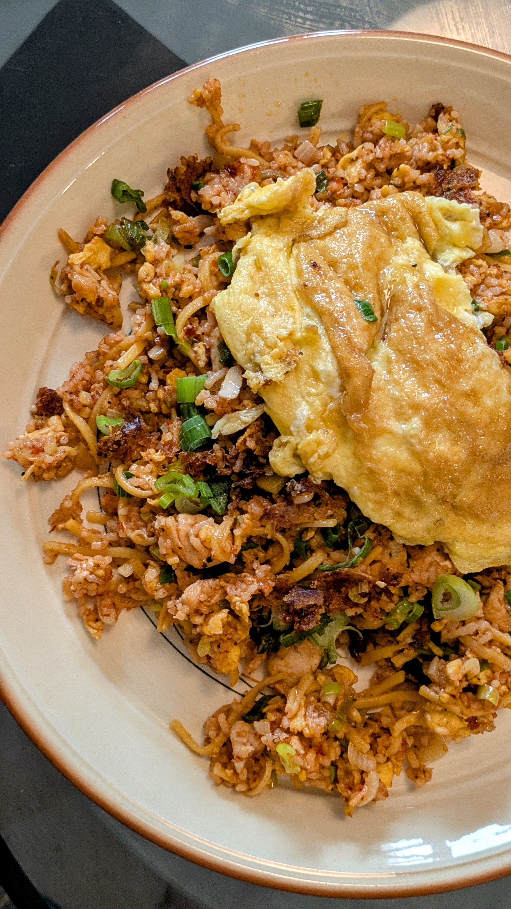

Schezwan Fried Rice

Description
You might think it is a Chinese dish, but actually Schezwan Fried Rice is a Indo-chinese disease mostly popular in the Indian state of Maharashtra as I am told by my boyfried. The first time I had this was when he cooked it for me with loads of spicy schezwan sauce and I didn't like it much and found it too hot. But I knew he his deeply passionate about schezwan chicken fried rice so I kept my thoughts to myself. After eating it numerous times since then I have actually come to love it, and just yesterday I was saying how the fried rice needed more schezwan sauce. Oh, how times change!
Even though Triple Schezwan Fried Rice is the og, this is it's simpler cousin with fewer elements and hence easy to make and just as good. Now, let's get right into it.
Ingredients
- the most important thing day old Rice
- schezwan sauce
- shredded boiled chicken, you can use breast chicken but thighs are superior
- spring onions loads of it
- minced ginger and garlic
- eggs for the fried rice and on top
- oil
- soy sauce
- black pepper
- salt
Instructions
- First prep all your ingredients as this is the slightly extensive step, after which the cooking happens within minutes.
- Mince your garlic and ginger, loads of it. Chop the white part of your spring onions evenly, and reserve the green part for garnishing. The green part can be roughly chopped.
- Boil the chicken thighs or breast until they are cooked through and shred and keep aside.
- Now, heat oil in a wok and once it is hot, beat your eggs with a bit of salt and add to the pan. Scramble the eggs and cook until they are done. Remove and keep aside
- Now, we start cooking. Heat oil in the same wok. Once it is hot, add the ginger and garlic and white part of your spring onions. Cook until they are aromatic. Add the chicken, eggs, and rice and mix everything well. There should be no lumps of rice.
- Add a generous amount of schezwan sauce, soy sauce, black pepper powder, and salt to taste. Mix everything well and fry for a few minutes until everything is mixed well to your liking.
- Take out in a plate, you can top it with a sunny-side up egg and garnish with spring onions.
Home